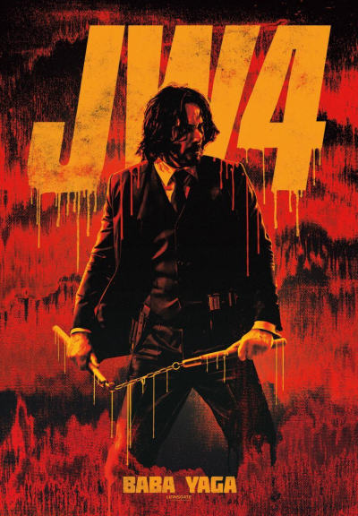

Com o preço por sua cabeça cada vez maior, o lendário assassino de aluguel John Wick leva sua luta contra o High Table global enquanto procura os jogadores mais poderosos do submundo, de Nova York a Paris, do Japão a Berlim.
Não há caminho de volta, só um sobrevive. John Wick (Keanu Reeves) descobre um caminho para derrotar a Alta Cúpula. Mas antes que ele possa ganhar sua liberdade, Sr. Wick deve enfrentar um novo inimigo com poderosas alianças e forças que transformam velhos amigos em inimigos.
Estreia na próxima quinta de 23/03/23 nos cinema de todo o Brasil